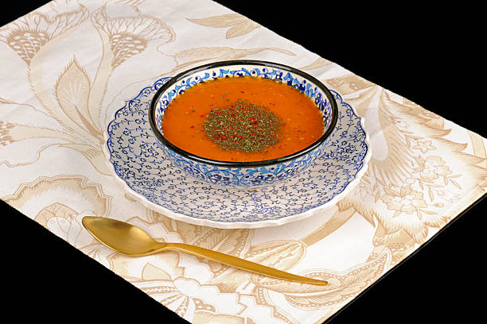

Kışın sofraların vazgeçilmezi ve şifa kaynağı tarhana çorbası bir çorbanın alabileceği en güzel hallerden, tariflerden biri.
Ve işte çok seveceğiniz tarifi sizler için hazır...

Tarhana Çorbası
Malzemeler
- 3 yemek kaşığı toz tarhana
- 1 çorba kaşığı salça
- 1 çorba kaşığı tereyağı
- 1 çay kaşığı nane
- Tuz
- 1 çay kaşığı kırmızı biber
Nasıl yapılır?
- 1 çorba kaşığı tereyağı tencereye alın ve eritin.
- 1 çorba kaşığı salçayı tencereye ekleyin ve yağda kızdırın.
- Üzerine 5 su bardağı su ekleyin.
- Başka bir kabın içinde de, 1 su bardağı suya, tarhanayı ekleyin ve karıştırın.
- Kaynamakta olan tencerenin içine bu karışımı dökün.
- 15-20 dakika pişirin. Nane ve kırmızıbiberİ ilave edip servis yapın.
İŞTE PÜF NOKTALAR!!!
- Tarhana çorbası yapımında dikkat edilmesi gereken en önemli husus dibinin tutmamasını sağlamaktır. Bu durumla karşı karşıya kalmamak için tarhanayı sürekli karıştırmanız gerekir.
- Tarhana çorbası, yapımında dikkat edilmesi gereken bir diğer durumda kıvamını doğru ayarlamaktır. Kıvamını doğru ayarlamadığınız taktirde, tarhana çorbasında küçük parçacıklar oluşacaktır.
AFİYET OLSUN